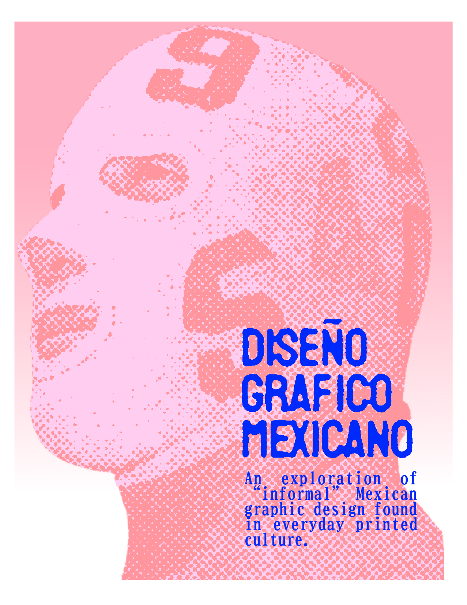
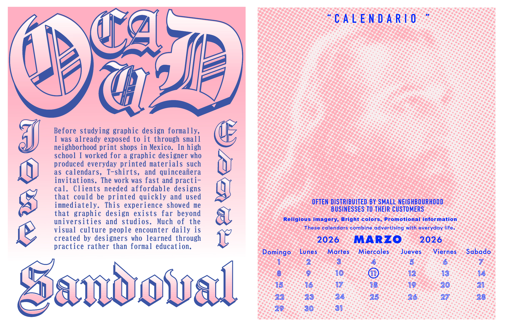
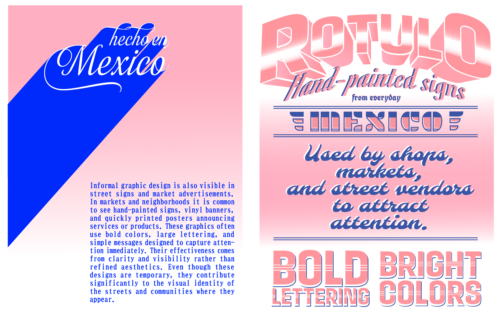
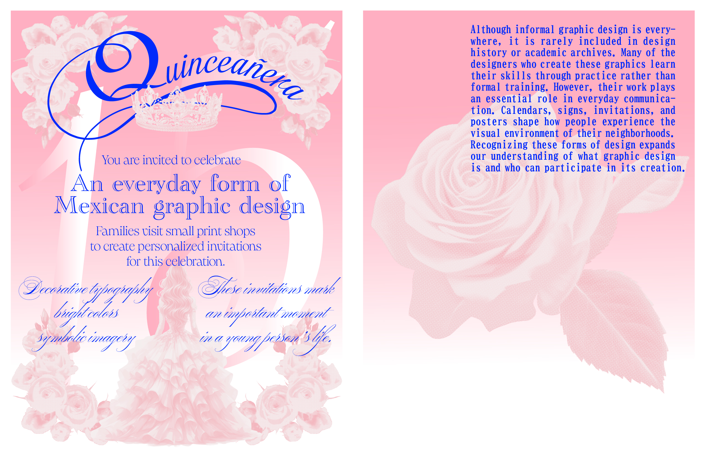
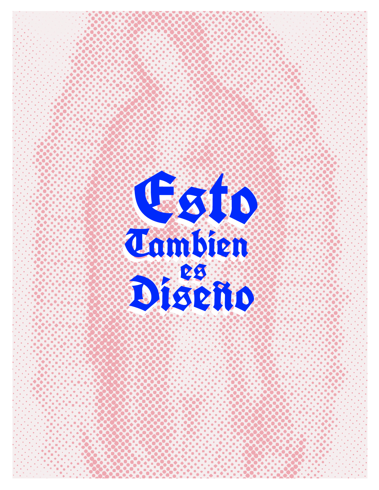

The goal of the archive is to show the variety of graphic design in Mexico. Design exists in many contexts, from institutional and cultural work to more informal and popular forms of communication. The site is organized by decades, allowing users to explore how design has changed over time. Users start on the homepage, where each square represents a decade. Clicking on a decade opens a collection of works from that period. Each piece can then be viewed individually with a larger image and key information.
This project was developed as part of a graphic design research assignment and works as a proof-of-concept for a larger archive. The archive is not complete, but it serves as a starting point for exploring the history of graphic design in Mexico.
ZINE PROJECT
This project also includes a printed zine that explores informal Mexican graphic design. It focuses on everyday visual culture such as rótulos, calendars, quinceañera invitations, and market graphics. The zine translates these elements into a physical format, connecting the digital archive with print-based design practices.




